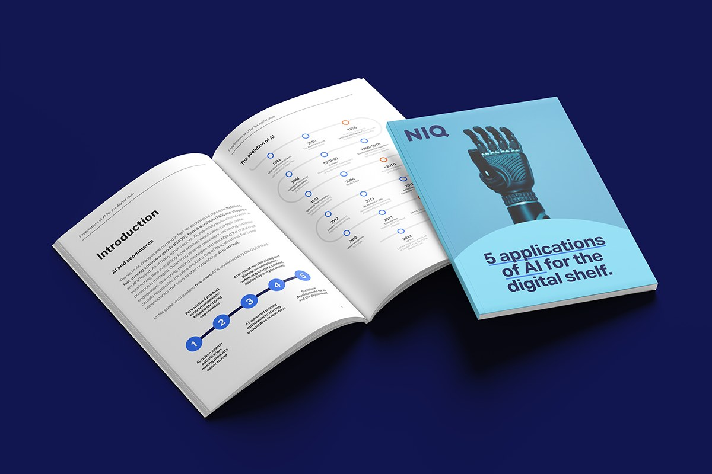
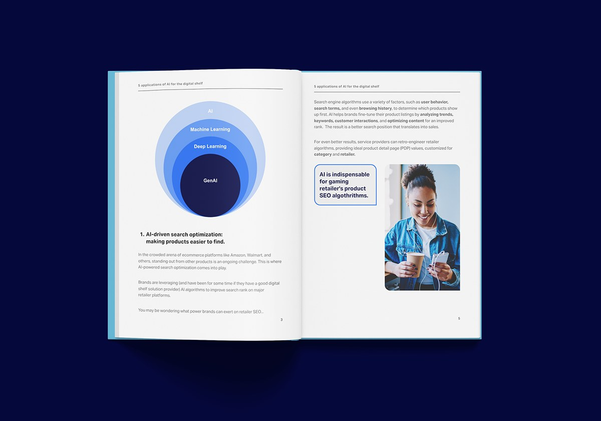

Print & digital · Éditorial
Ebook sur l'IA et le digital shelf
Le design de l'ebook de NIQ « 5 Applications of AI for the Digital Shelf », qui explique l'IA aux professionnels de l'e-commerce.
- Client
- NIQ for Digital Commerce
- Année
- 2025
- Rôle
- Designer
- Format
- Ebook PDF interactif

Le brief
NIQ for Digital Commerce voulait montrer comment les marques peuvent utiliser l'IA pour gagner en visibilité, en ventes et en avantage concurrentiel sur le digital shelf.
L'ebook devait être soigné et fidèle à la marque, rendre des usages complexes de l'IA accessibles à un large public, et générer de l'engagement et des leads.
01
Approche design
Structure
Une grille épurée rend la lecture logique et agréable. Elle est devenue la mise en page de référence pour tous les ebooks NIQ suivants. Des titres affirmés, des sous-titres et des encadrés permettent de repérer rapidement l'essentiel.
Le style suit la charte typographique et couleur de NIQ, entre crédibilité corporate et esprit moderne et digital.

Données & interactivité
Infographies et graphiques rendent les idées complexes digestes, comme la frise de l'évolution de l'IA ou le schéma imbriqué IA, machine learning, deep learning et IA générative. Des icônes signalent les points clés.
Dans la version digitale, des boutons d'appel à l'action renvoient vers d'autres ressources et les services de NIQ, et des liens permettent de naviguer facilement entre les sections et vers des rapports associés.
Défis
J'ai travaillé avec la responsable contenu pour transformer les usages de l'IA en enseignements clairs et concrets. Plusieurs cycles de relecture design ont été nécessaires pour trouver le bon équilibre avec la marque NIQ.
Résultats
L'ebook a généré des leads et reçu de bons retours de professionnels du secteur sur sa clarté et sa lisibilité.
Télécharger l'ebook complet sur le site de NIQ (en anglais) ↗